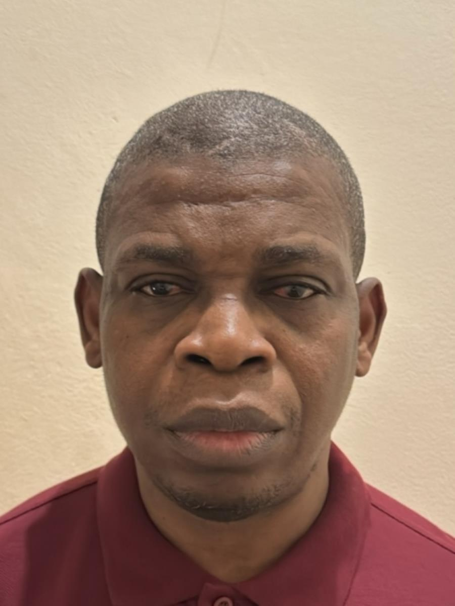

People
Research Fellow
University of Southampton
Dr Hammed Aminulai is a Research Fellow in the Railway Group at the University of Southampton, part of the Infrastructure Research group within the School of Engineering. His research spans structural analysis and design, the investigation of steel deterioration (corrosion) in concrete structures, the seismic strengthening of masonry buildings, and, most recently, the lateral resistance of railway sleepers. He combines analytical and numerical modelling with laboratory testing to characterise how ageing materials and structures behave under load. He was appointed as a Research Fellow in 2023 after completing his PhD in Structural Engineering, in which he investigated the impact of corrosion-induced steel degradation on the axial load-carrying capacity of low-strength concrete columns. Since then he has worked on several projects examining the lateral resistance of different railway sleepers and ballast conditions, alongside the lab’s wider programme on corrosion-damaged and fibre-optic-monitored bridge structures. He also assists PhD, MSc and undergraduate students with laboratory testing, contributes to research group meetings, and prepares journal and conference publications.
Before moving into full-time research, Dr Aminulai spent over a decade combining civil engineering practice with academic teaching in Nigeria. As Principal Resident Engineer at Hancock Ogundiya and Partners in Lagos (2007–2018), he supervised major road construction and dualisation projects — including sections of the Abuja–Lokoja road — alongside project cost estimation, progress reporting, road reconnaissance surveys, and investigations of earthworks and structural failures. Since 2012 he has also held a lecturing position in Civil Engineering at the Federal University of Technology Minna, teaching Structural Mechanics and Strength of Materials as module lead and Laboratory Practical and Design to final-year students, while supervising undergraduate research projects each session. This grounding in construction practice and teaching, together with experimental work on the seismic strengthening of unreinforced masonry buildings in Nepal, underpins his practical, field-informed approach to structural research.